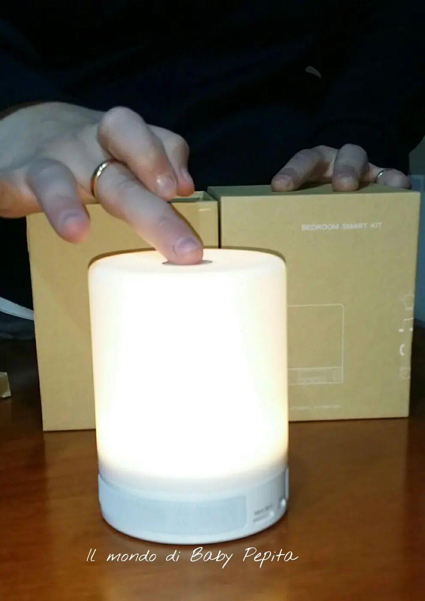
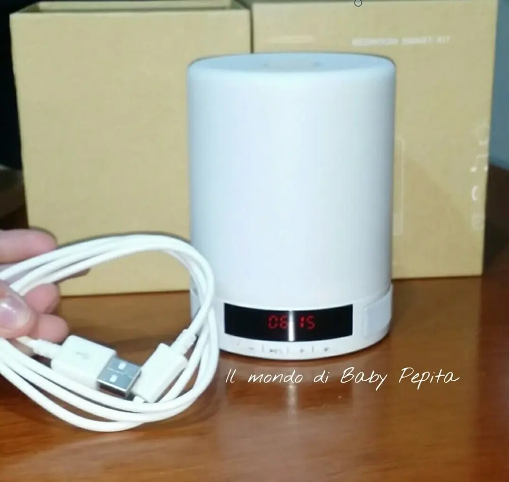
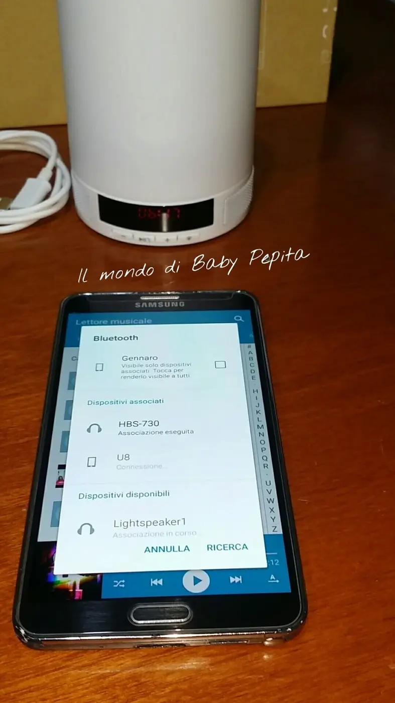
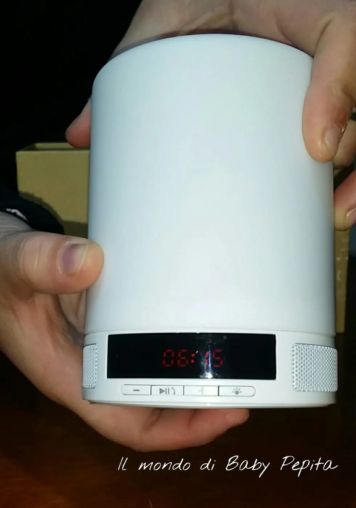

Doeracil - Altoparlante bluetooth
Parliamo oggi di un'altra collaborazione Amazon, il venditore questa volta è Doeracil. .
Si tratta di un oggetto 3 in 1, utile un pò a tutti in casa essendo un altoparlante bluetooth + sveglia + luce notturna.Molto deliziosa direi!
Design moderno, dalla forma cilindrica, può essere usata anche come complemento d'arredo.A me da più l'impressione di una candela :DSulla parte superiore troviamo il tasto a sfioramento, quindi touchscreen che serve per regolare l'intensità della luce. Ha appunto 4 toni di luce.
Nella parte inferiore, (proprio sotto la cassa per intenderci) invece, troviamo il tasto di accensione e spegnimento e i 4 tasti che permettono di regolare la sveglia.
Sul davanti in basso troviamo, poi, le casse (su entrambi i lati) + i tasti di navigazione + lo slot per la micro sd + la porta per la ricarica.

Dotata di lettore microSD per riproduzione di musica in formato Mp3/Wma/Ape.
Essendo bluetooh è tranquillamente trasformabile in un comodo viva voce per rispondere al telefono mentre siamo impegnate a fare altro.

SCHEDA TECNICA:Capacità della batteria: 3.7V / 1800mAh polimeri di litio
Tempo di ricarica: 2-4 ore
Materiale: ABS / silicone Dimensioni: 118x128 mm Peso: 270 gr Durata in riproduzione: 11 ore Durata illuminazione: 7 ore alla massima luminosità. 15 ore alla minima luminosità.

Come già detto la funzione principale dell'oggetto che è quello di cassa bluetooth che permette di collegare telefoni e tablet, associarlo al bluetooth è veloce e senza problemi.
